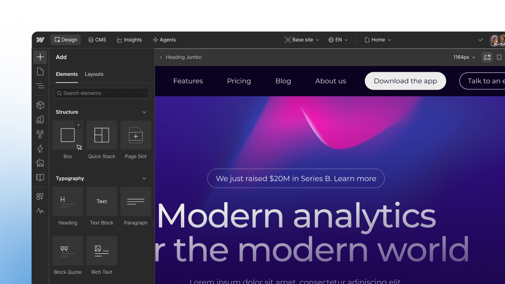
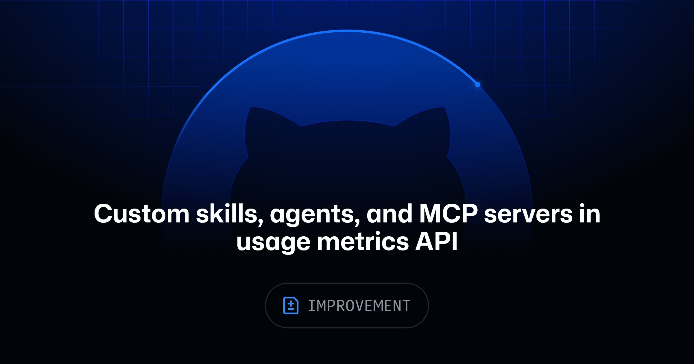
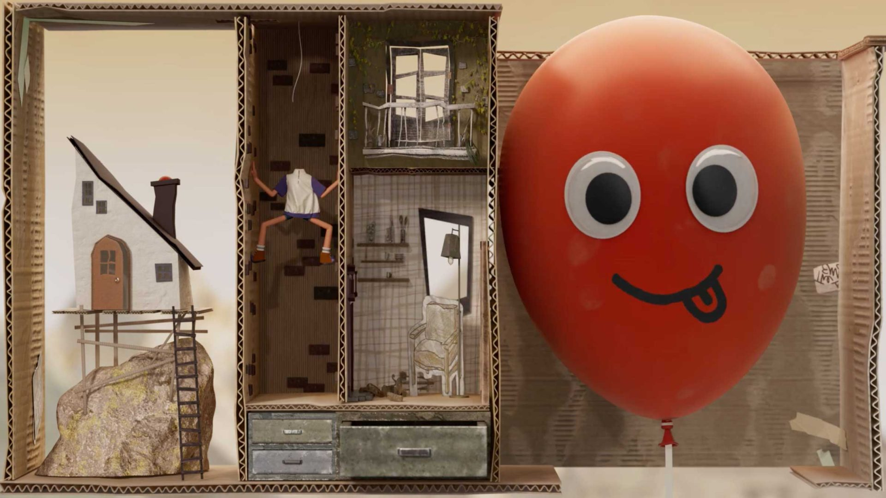

今天没有什么炸裂更新，反而都是些用了以后少骂两句人的小东西：Linear 给 Loop 接上 Slack、GitHub 和 Figma，Webflow 重新收拾容器，Chrome 给 position-area 做了个可视化编辑器，GitHub 也终于不再把自定义工具全塞进 other。
共同点很朴素：事情做完以后，至少还能看明白是谁触发的、改了什么、用了什么。比再来一个“万能生成器”实在。
Linear 给 Loops 加了 Slack、GitHub 触发器、模板和三档推理强度；Linear Agent 现在还能读写 Figma，从 frame 生成实现要求，或根据 issue 起一版设计提案。Cursor Origin 同步也补上了。
这次确实比“项目管理里放个聊天框”像样。只是 Figma 写回、版本回退和多人冲突都还没实测，先不替它吹自动化；这三件事过不了，演示再顺也只是演示。

Webflow 用一个 Box 收掉 Div、Section、Container、Columns、Grid、V Flex 和 H Flex，同一个元素可以改成 section、nav、main、article、aside 等语义标签，还补了 19 个全局 tag selectors。Designer API、MCP 都能操作，Free 计划也能用。
更新不性感，但很实用。Box 也救不了乱套的 DOM——以前一层层套 Div 的人，换个新名字还是会继续套。

DevTools 给 CSS Anchor Positioning 的 position-area 加了图形化网格，横纵轴、self keyword 和隐式 anchor 都能直接点。做浮层终于不用对着一串值猜九宫格了。小更新，我很喜欢。
Atelier UI 把 WebGL text、image、scene 拆成可复制组件，通过一个全局 React Three Fiber Canvas 统一渲染；真实 DOM 仍留在页面里，只把视觉投到 WebGL 平面。滚动由 Motion 统一驱动 Lenis 与 Canvas，避免两个 frame loop 互相追赶。
网页特效教程最烦的是只教效果，不管残局。这篇把残局也写了：DOM 文本继续负责搜索和辅助技术，位置只在需要时重算，父级有 transform 才逐帧 reflow，reduced motion 直接退成淡入淡出。
Shader 可以晚点抄，这几条先抄。移动端和低端 GPU 还没实测。

Copilot usage metrics API 现在会单列 custom skills、agents、MCP servers、slash commands 和 plugins，每类最多 25 项，不再统统归到 other。
用来清理没人碰的入口很合适。GitHub 自己也提醒，客户端遥测可能少算；谁拿调用次数做绩效，谁就会收获一堆为了数字而调用的工具。
Vercel MCP 新增 submit_feedback，能把 task、expected、actual 和 type 一起送回 Vercel；需要登录，而且必须由用户明确发起。功能很小，边界写得比不少“大功能”清楚。
2.11.1 只做了一件事：把 global styles npm package 升到 9.2.2，修复 2.11.0 带来的样式破损。前一版刚公开 Combobox 设计，代码还没跟上。
这就是设计系统的日常，一边发新组件，一边修全局样式。升级前看 release notes，别只看版本号。
DWP 修了 Welsh language toggle 在 axe-core 4.14 里触发的 Label in Name 问题，并计划退役自家组件，改用 GOV.UK 版本。能合上游就合上游，给一个语言切换器长期背两套测试债才是真的贵。

原片播放器https://player.vimeo.com/video/1234299289?title=0&byline=0&portrait=0
Kim Soobin 把 mind 变成一只红色气球，body 留在纸板搭的现实里。气球鼓起来、瘪下去、到处乱撞，情绪根本不用解释；镜头像翻立体书，横着看生活，往里钻念头。
这是今天我最喜欢的一条。纸板、气球、红色，东西少得可怜，但每一样都在讲同一件事。很多产品片输就输在概念还没找到，材质、粒子、3D 镜头已经堆满了。
今天 API 没有新片，硬凑没意思。留三个位置做去重：
position-area 编辑器、Atelier UI、GitHub 自定义工具使用统计、Vercel MCP 反馈、Ontario DS 2.11.1、DWP 5.1.1。get_css_styles 与 Apple creative assets；本期不换标题再讲一遍。核验说明：Linear、Webflow、Chrome、GitHub、Vercel、Ontario 与 DWP 官方页面，Codrops 教程，Stash WordPress API、文章页及 Vimeo player 于 2026-10-25 回读。未进行 Linear Figma 写回、Webflow 旧站迁移、Atelier UI 性能和 GitHub 遥测完整性实测。全部嵌入图均下载并核验原始像素，宽度不低于 816px。